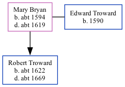

Mary Troward (née Bryan) c1594 - c1619
[ Home ] | [ Calendar ] | [ Surnames Index ] | [ Family History ]Mary Bryan, the 9 times great-grandmother of <a href="I1.html">Nigel Horne</a>, was born in Kent, England <i>c.</i> 1594, was baptized in St Lawrence, Thanet, Kent, England on Jan 28, 1594 and also married Edward Troward (with whom she had 1 child, Robert) there, on Jun 14, 1613<span class="citation">2</span> (KFHS CD 29).<p>She died <i>c.</i> 1619 in Kent<span class="citation">1</span> and was buried in St Lawrence on Jun 23, 1619<span class="citation">1,2,3</span>.
Children
- Robert was born c. 1622
Citations
- England, Select Deaths and Burials, 1538-1991 Ancestry.com Operations, Inc.
- Familysearch.org (<a href="http://www.familysearch.org/Eng/search/IGI/individual_record.asp?recid=100010036903&lds=1®ion=2&frompage=99">www.familysearch.org</a>)
- Kent Burials - Findmypast
Media
England Marriages 1538-1973 - R_848388321/2
Canterbury Marriages - GBPRS/CANT/M/97141971/2
Canterbury Burials - GBPRS/CANT/D/95262358
Kent marriages and banns - GBPRS/EASTKENT/MAR/051266/2
Family Tree
Generated by Ged2Site. Last updated on Jul 20, 2025